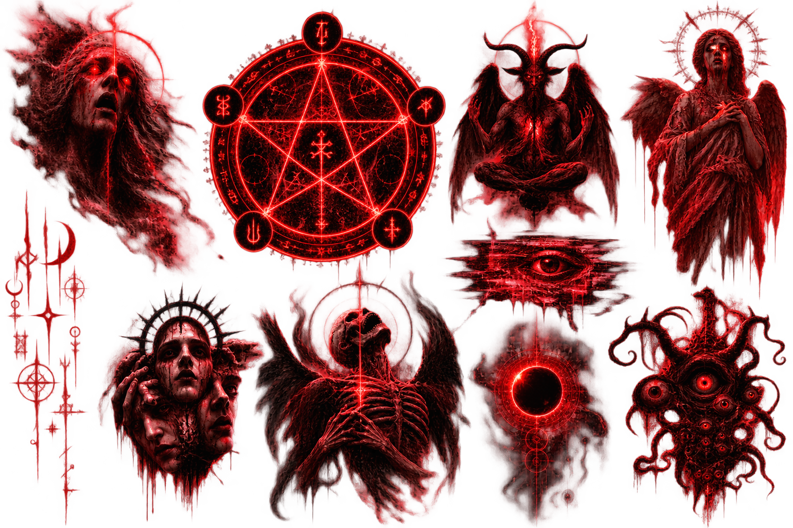

This page contains flashing and rapidly changing imagery, disturbing horror imagery, sudden visual effects, and unsettling audio. Do not enter if you are sensitive to flashing lights, seizures, migraines, or intense audiovisual horror.
PREPARING AUDIO…